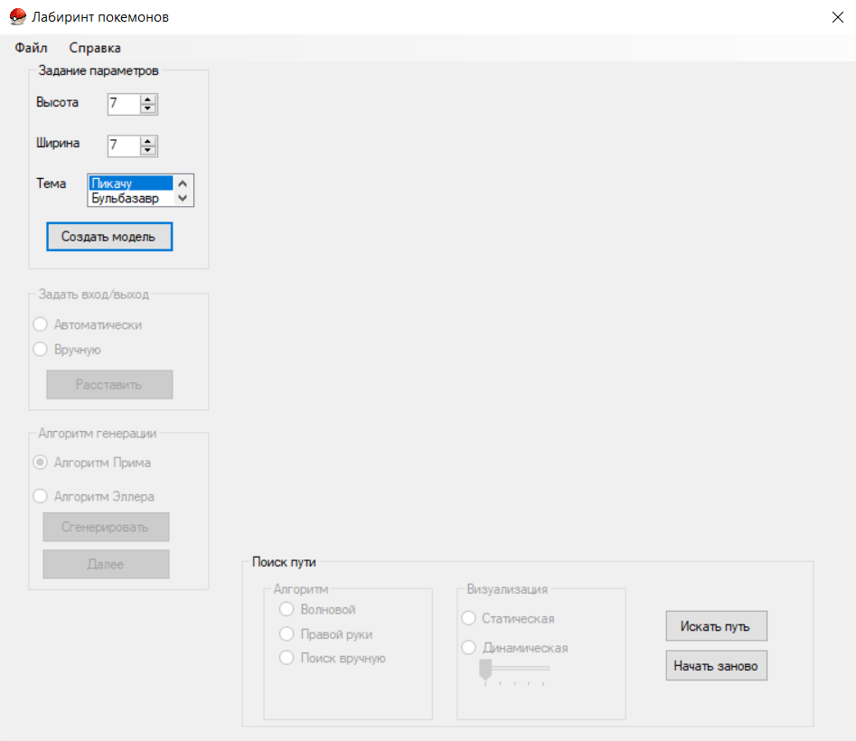
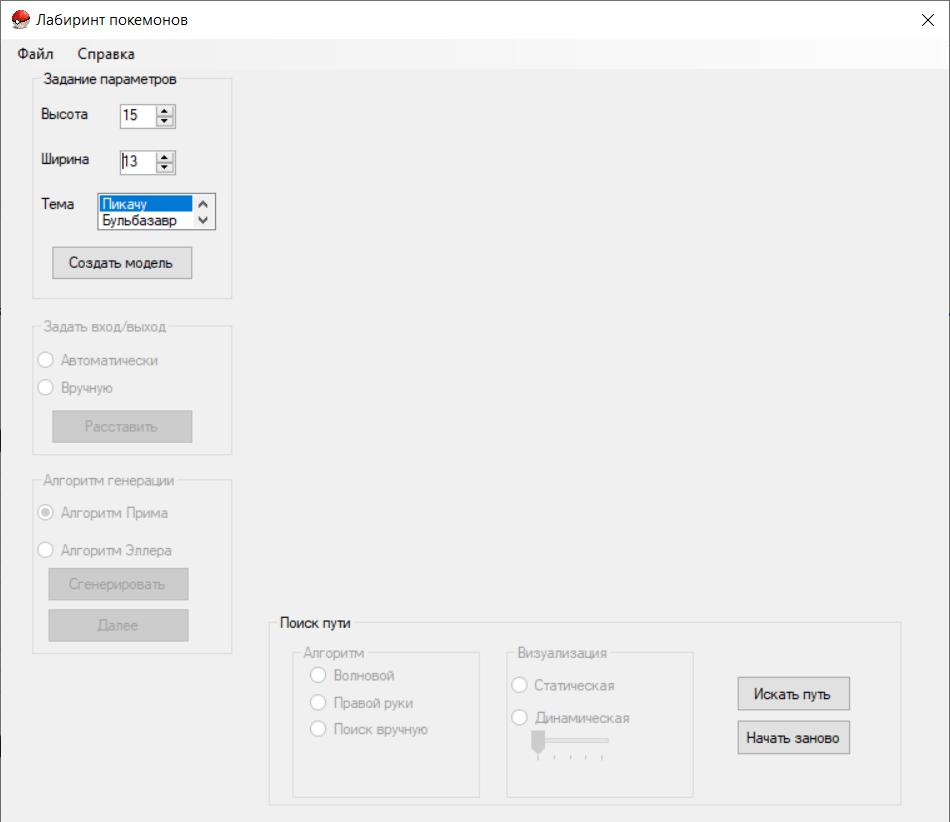
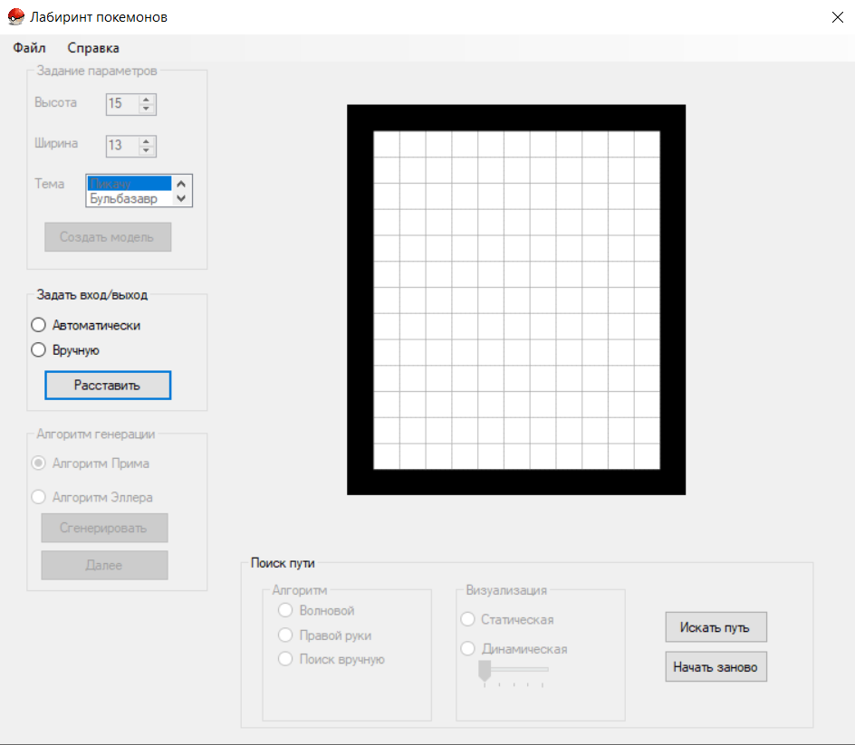
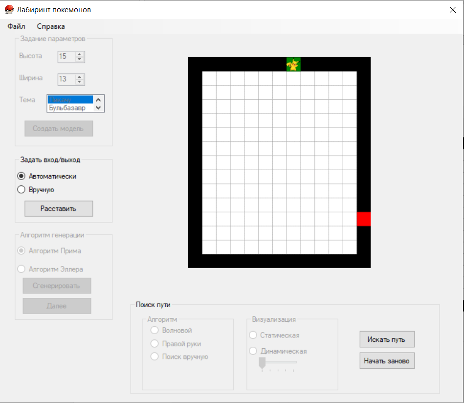
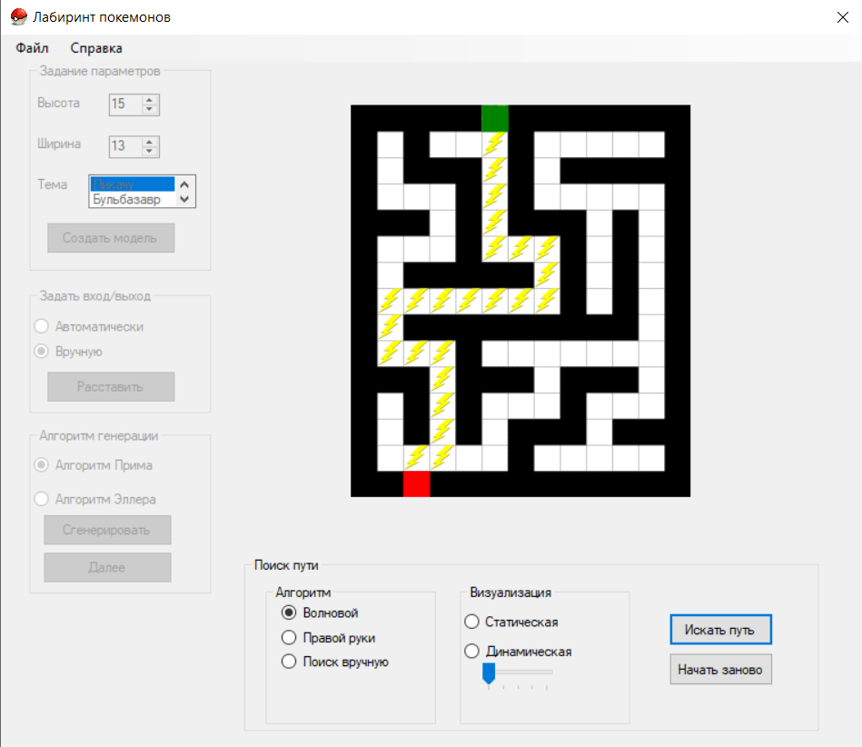

Лабиринт – архитектурное сооружение, сконструированное таким образом, что, однажды попав в него, невозможно или очень трудно выбраться обратно. Иногда это парк или сад, созданный по тому же принципу. Программная система совместима с Windows 7, 8 и 10.
При запуске программы будет появляться главное окно программы.

В блоке "Параметры" устанавливаются значения высоты и ширины лабиринта. Также можно выбрать тему лабиринта. Далее нажать кнопку "Создать можель."
В блоке "Генерация" необходимо выбрать способ расстановки входа и выхода лабиринта.
Далее нажать кнопку "Раставить".
Далее выбирается алгоритм создания лабиринта. После выбора нажать кнопку "Сгенерировать".
В блоке "Поиск пути" необходимо выбрать один из способов прохождения лабиринта, а также способ визуализации. При выборе режима "Динамический" можно установить нужную скорость прохождения лабиринта. Далее нужно нажать кнопку "Искать".
Нажав на копку "Х" существляется выход из программы, её полное завершение.